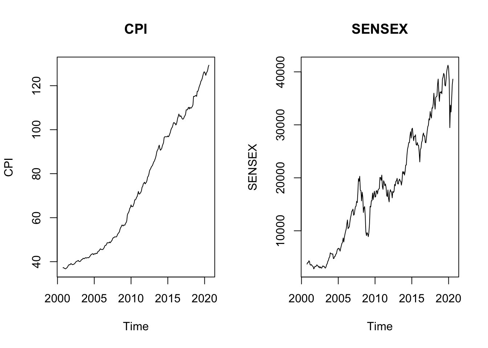
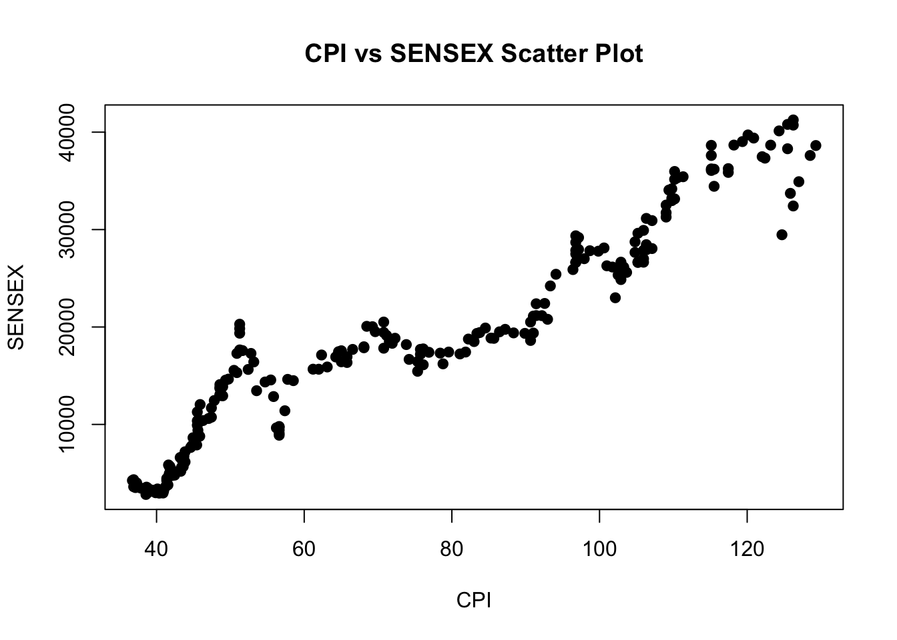
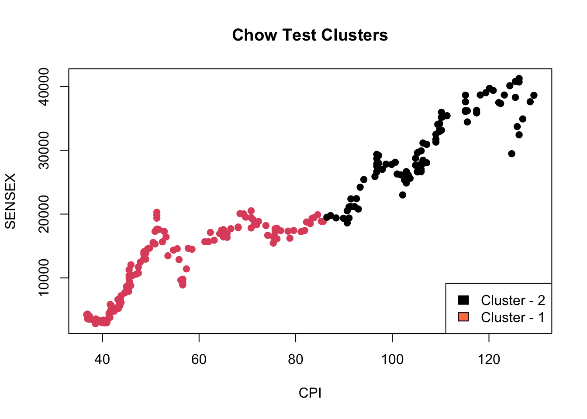
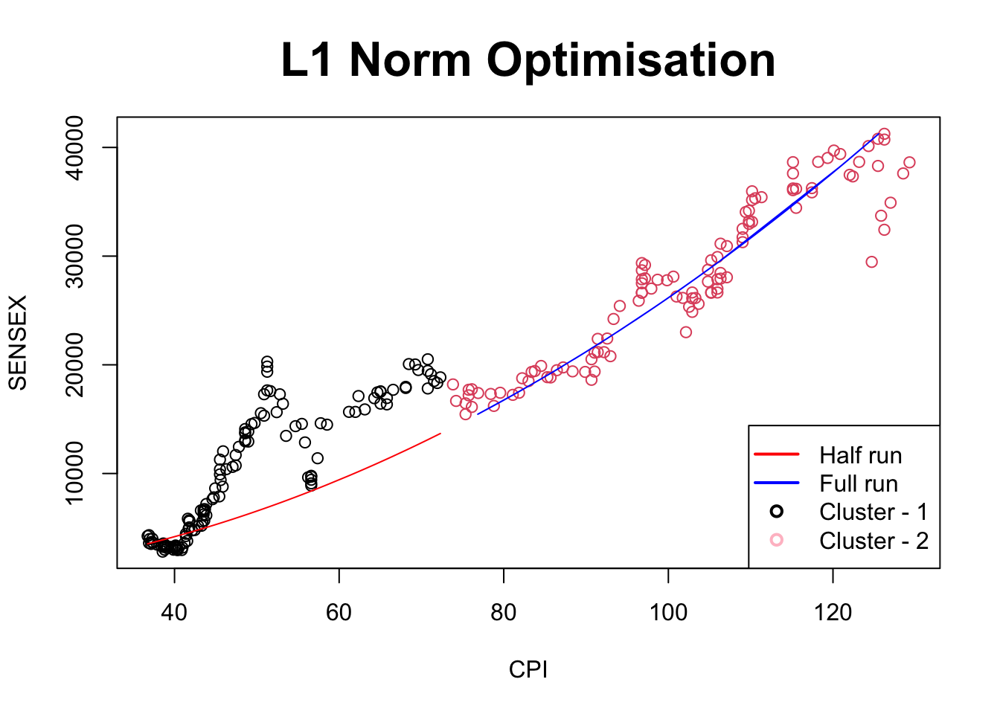
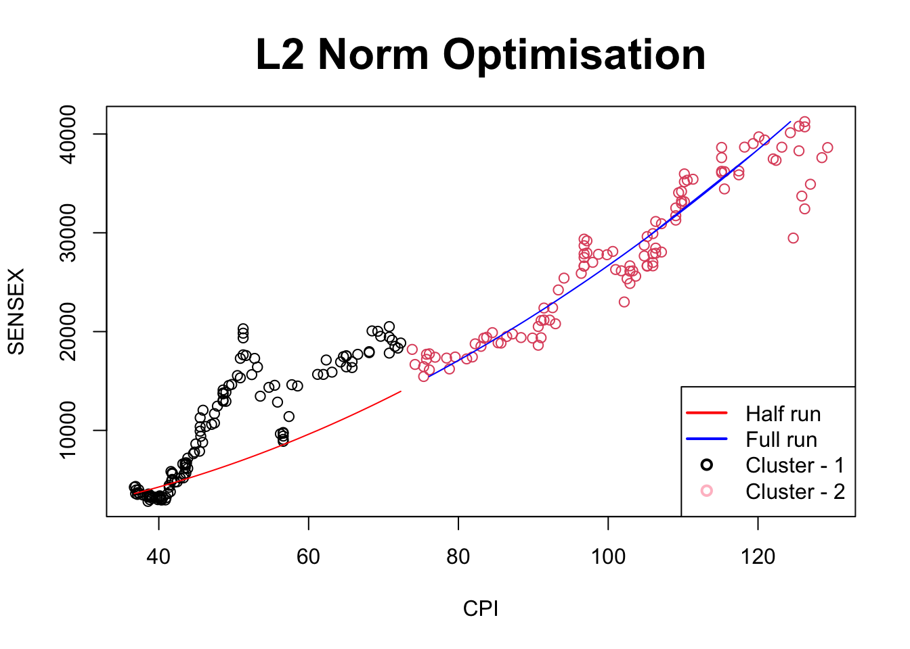
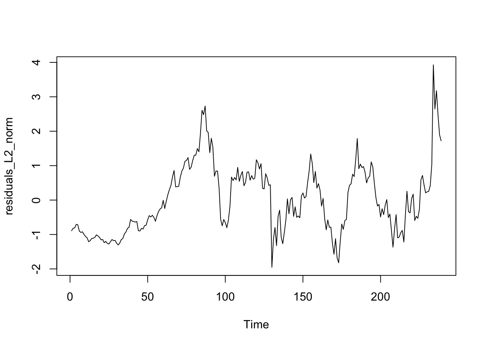

Now that we have finalised the data and checked for bi-directional causality, we now attempt to fit a SWAP model on the data. First we load and observe the data:
dat.gold <-read.csv("GoldUP.csv")CPI.dat <- dat.gold$CPISENSEX.dat <- dat.gold$SensexCPI.dat <-ts(CPI.dat, start =c(2000,10), frequency =12)SENSEX.dat <-ts(SENSEX.dat, start =c(2000,10), frequency =12)# Visualising the data par(mfrow =c(1,2))plot.ts(CPI.dat, main ="CPI", ylab ="CPI")plot.ts(SENSEX.dat, main ="SENSEX", ylab ="SENSEX")

# Observing the trend in the dataplot(CPI.dat, SENSEX.dat, main ="CPI vs SENSEX Scatter Plot",xlab ="CPI",ylab ="SENSEX",pch =19)

Now, we need to establish a mechanism through which we make a division on the plane that gives us the two domains where CPI and SENSEX can take the role of being the predictors respectively. One way to do this is through the Chow test as discussed in the other data set.
Three problems that we observe with this approach are:
This method is very computationally intensive as it requires us to fit a regression model for each choice of the breaking point \(d\) and it’s convergence is based on the assumption that the increments in \(d\) are not infinitely small.
The convergence is not stable for the L2 model and hence we need to rely on some other method to figure out the break point anyways.
The way the Chow test is structured forces us to have a hard decision boundary based on one of the coordinates in the data. For example, in our current data the best Chow test can divide the data is all points such that \(X < X_\text{breakingpoint}\). This means that we cannot have a cluster type of classification using this approach, something that SWAP paradigm need not prohibit.
These three issues coupled with the fact that Chow test to determine the break point is not problem agnostic, motivates us to consider an alternative method to find a natural breaking point.
The Gaussian Mixture Model
I propose we use the Gaussian Mixture Model approach to cluster our data into 2 groups with a similar linear trend. To accomplish this I use the Mahalanobis distance in the standard GMM algorithm as it is characteristic of identifying linear patterns in data.
The exact code that details my approach to this is available in GMM.R.
We can compare this result with the Chow test as well:
# Load the strucchange packagelibrary(strucchange)
Warning: package 'strucchange' was built under R version 4.3.3
Loading required package: zoo
Attaching package: 'zoo'
The following objects are masked from 'package:base':
as.Date, as.Date.numeric
Loading required package: sandwich
Warning: package 'sandwich' was built under R version 4.3.3
# Specify the break pointbreakpoint_final <-1min_val <-100for (breakpoint in10:150){# Perform the Chow test chow_test <-sctest(SENSEX.dat ~ CPI.dat, type ="Chow", point = breakpoint)if (chow_test$p.value < min_val){ min_val <- chow_test$p.value breakpoint_final <- breakpoint }}plot(data, col =as.factor(CPI.dat<breakpoint_final), main ="Chow Test Clusters",xlab ="CPI", ylab ="SENSEX",pch =19)legend("bottomright",c("Cluster - 2","Cluster - 1"),fill =c("black", "coral"))

We observe that the Chow test does not give us the break in pattern that we would want for the SWAP model and hence, we go ahead with the GMM clusters.
L1 Norm Optimisation
Finally, let’s fit the SWAP models on the data set. First we fit the L1 norm optimisation model.
The “fit function” remains the constant for either of the models:
\[
y = g(x) = ax^2 + bx + c\\
x = g^{-1}(y) = \dfrac{-b \pm \sqrt{b^2 - 4a(c-y)}}{2a}
\]And, we wish to find the estimators for \(a, b\) and \(c\) that minimise the loss function:
We use gradient descent to achieve the same and here is the final algorithm:
# To be estimateda =0b =0c =1# Hyper Parametersn =150lr =1e-4# DataX <-as.numeric(CPI.dat)Y <-as.numeric(SENSEX.dat)# part - 1X1 <- X[which(gmm_result$clusters ==1)]Y1 <- Y[which(gmm_result$clusters ==1)]# part - 2X2 <- X[which(gmm_result$clusters ==2)]Y2 <- Y[which(gmm_result$clusters ==2)]# Auxilliary Derrivative funcitonsder_a <-function(X,Y,a,b,c){ ret <-0for(i in1:length(X)){if(Y[i]-(a*X[i]^2+ b*X[i] + c) >0){ ret <- ret - X[i]^2 }else{ ret <- ret + X[i]^2 } }return(ret/length(X))}der_b <-function(X,Y,a,b,c){ ret <-0for(i in1:length(X)){if(Y[i]-(a*X[i]^2+ b*X[i] + c) >0){ ret <- ret - X[i] }else{ ret <- ret + X[i] } }return(ret/length(X))}der_c <-function(X,Y,a,b,c){ ret <-0for(i in1:length(X)){if(Y[i]-(a*X[i]^2+ b*X[i] + c) >0){ ret <- ret -1 }else{ ret <- ret +1 } }return(ret/length(X))}# Cluster - 1for(i in1:n){ a_n <- a - lr*der_a(X1,Y1,a,b,c) b_n <- b - lr*der_b(X1,Y1,a,b,c) c_n <- c - lr*der_c(X1,Y1,a,b,c) a <- a_n b <- b_n c <- c_n}# Inverse of Auxilliary Functionsder_inv_a <-function(X,Y,a,b,c){ ret <-0for(i in1:length(X)){ sqrt_term <-sqrt(abs(b^2-4*a*(c-Y[i])))if(X[i]+((b/(2*a)) -sqrt(abs(b^2-4*a*(c-Y[i])))/(2*a)) >0){ ret <- ret - b/(2*a^2) + (-b +2*sqrt_term -4*a*(c-Y[i])/sqrt_term)/(2*a^2) }else{ ret <- ret + b/(2*a^2) + (-b +2*sqrt_term -4*a*(c-Y[i])/sqrt_term)/(2*a^2) } }return(ret/length(X))}der_inv_b <-function(X,Y,a,b,c){ ret <-0for(i in1:length(X)){ sqrt_term <-sqrt(abs(b^2-4*a*(c-Y[i])))if(X[i]+((b/(2*a)) -sqrt(abs(b^2-4*a*(c-Y[i])))/(2*a)) >0){ ret <- ret + (1/(2*a))*(1+ b/(a*sqrt_term)) }else{ ret <- ret - (1/(2*a))*(1+ b/(a*sqrt_term)) } }return(ret/length(X))}der_inv_c <-function(X,Y,a,b,c){ ret <-0for(i in1:length(X)){ sqrt_term <-sqrt(abs(b^2-4*a*(c-Y[i])))if(X[i]+((b/(2*a)) -sqrt(abs(b^2-4*a*(c-Y[i])))/(2*a)) >0){ ret <- ret + (1/sqrt_term) }else{ ret <- ret - (1/sqrt_term) } }return(ret/length(X))}# Cluster - 2for(i in1:n){ a_n <- a - lr*der_inv_a(X2,Y2,a,b,c) b_n <- b - lr*der_inv_b(X2,Y2,a,b,c) c_n <- c - lr*der_inv_c(X2,Y2,a,b,c) a <- a_n b <- b_n c <- c_n}p1y <- a*X1^2+ b*X1 + cp2x <--b/(2*a) +sqrt(b^2-4*a*(c - Y2))/(2*a)plot(X,Y, xlab ="CPI", ylab ="SENSEX", main ="L1 Norm Optimisation", cex.main =2, col = gmm_result$clusters)lines(as.numeric(X1),as.numeric(p1y),col ="red")lines(as.numeric(p2x),as.numeric(Y2),col ="blue")# Sample code to add a legend with lines instead of boxeslegend("bottomright", legend =c("Half run", "Full run", "Cluster - 1", "Cluster - 2"), col =c("red", "blue", "black", "pink"), lty =c(1, 1, NA, NA), # Line type for Half and Full run, NA for clusterspch =c(NA, NA, 1, 1), # Symbols for clusters onlylwd =2) # Line width for Half and Full run lines

print(paste("a = ",a,"b = ",b,"c = ",c))
[1] "a = 2.6166780791693 b = 0.0201341736689 c = 0.999170610862786"
Finally, we want to observe the residuals of this model fitting:
One detail that we need to observe here, we need to compute the residuals for the data carefully. In on region of our data, \(X\) is the predictor for \(Y\) and the other way round for cluster 2. Hence, the residuals would be based on \(Y\) in cluster-1 and \(X\) in cluster-2.
Another problem is that the scale of the data need not be the same and hence, we need to scale the errors if we want to observe the true pattern in the residuals like in a normal regression set-up.
# Computing residualsresiduals1 <-scale(Y1 - p1y)residuals2 <-scale(X2 - p2x)residuals_L1_norm <-c(residuals1, residuals2)# Mean of residuals - extremely close to 0print(mean(residuals_L1_norm))
[1] 8.434095e-18
# To observe if there is an underlying patternplot.ts(residuals_L1_norm)
# ADF test for stationaritylibrary(tseries)
Warning: package 'tseries' was built under R version 4.3.3
Registered S3 method overwritten by 'quantmod':
method from
as.zoo.data.frame zoo
adf.test(residuals_L1_norm)
Augmented Dickey-Fuller Test
data: residuals_L1_norm
Dickey-Fuller = -2.8403, Lag order = 6, p-value = 0.2225
alternative hypothesis: stationary
# Much better result than compared to any of the previous models
Contrary to our previous experiments, we observe that the residuals that we get for this model are much closer to being stationary.
L2 Norm Optimisation
We proceed with the same “fit function” \(g\) as described in the last section however, we now look at a L2 type of loss function defined as:
This changes our derrivatives for estimating the parameters, however, the rest of the model remains exactly the same.
# To be estimateda =0b =0c =1# Hyper Parametersn =70lr =1e-9# DataX <-as.numeric(CPI.dat)Y <-as.numeric(SENSEX.dat)# part - 1X1 <- X[which(gmm_result$clusters ==1)]Y1 <- Y[which(gmm_result$clusters ==1)]# part - 2X2 <- X[which(gmm_result$clusters ==2)]Y2 <- Y[which(gmm_result$clusters ==2)]# Auxilliary Derrivative funcitonsder_a <-function(X,Y,a,b,c){ loss <- (Y-(a*X^2+ b*X + c))*(-2*X^2)return(sum(loss)/length(X))}der_b <-function(X,Y,a,b,c){ loss <- (Y-(a*X^2+ b*X + c))*(-2*X)return(sum(loss)/length(X))}der_c <-function(X,Y,a,b,c){ loss <- (Y-(a*X^2+ b*X + c))*(-2)return(sum(loss)/length(X))}# Cluster - 1for(i in1:n){ a_n <- a - lr*der_a(X1,Y1,a,b,c) b_n <- b - lr*der_b(X1,Y1,a,b,c) c_n <- c - lr*der_c(X1,Y1,a,b,c) a <- a_n b <- b_n c <- c_n}# Inverse of Auxilliary Functionsder_inv_a <-function(X,Y,a,b,c){ loss <- (X - (-b/(2*a) +sqrt(b^2-4*a*(c-Y))/(2*a)))*(b -2*a*(c-Y)/sqrt(b^2-4*a*(c-Y)) -sqrt(b^2-4*a*(c-Y)))/(2*a^2)return(sum(loss)/length(X))}der_inv_b <-function(X,Y,a,b,c){ loss <- (X - (-b/(2*a) +sqrt(b^2-4*a*(c-Y))/(2*a)))*(b/sqrt(b^2-4*a*(c-Y)) -1)/(2*a)return(sum(loss)/length(X))}der_inv_c <-function(X,Y,a,b,c){ loss <- (Y-(a*X^2+ b*X + c))*(-2/sqrt(b^2-4*a*(c-Y)))return(sum(loss)/length(X))}# Cluster - 2for(i in1:n){ a_n <- a - lr*der_inv_a(X2,Y2,a,b,c) b_n <- b - lr*der_inv_b(X2,Y2,a,b,c) c_n <- c - lr*der_inv_c(X2,Y2,a,b,c) a <- a_n b <- b_n c <- c_n}p1y <- a*X1^2+ b*X1 + cp2x <--b/(2*a) +sqrt(b^2-4*a*(c - Y2))/(2*a)plot(X,Y, xlab ="CPI", ylab ="SENSEX", main ="L2 Norm Optimisation", cex.main =2, col = gmm_result$clusters)lines(as.numeric(X1),as.numeric(p1y),col ="red")lines(as.numeric(p2x),as.numeric(Y2),col ="blue")# Sample code to add a legend with lines instead of boxeslegend("bottomright", legend =c("Half run", "Full run", "Cluster - 1", "Cluster - 2"), col =c("red", "blue", "black", "pink"), lty =c(1, 1, NA, NA), # Line type for Half and Full run, NA for clusterspch =c(NA, NA, 1, 1), # Symbols for clusters onlylwd =2) # Line width for Half and Full run lines

print(paste("a = ",a,"b = ",b,"c = ",c))
[1] "a = 2.66809320579757 b = 0.0470135034079921 c = 1.00085458885729"
Performing the similar residual analysis as we did for the previous section, here are the final results that we get:
# Computing residualsresiduals1 <-scale(Y1 - p1y)residuals2 <-scale(X2 - p2x)residuals_L2_norm <-c(residuals1, residuals2)# Mean of residuals - extremely close to 0print(mean(residuals_L2_norm))
[1] 1.612422e-17
# To observe if there is an underlying patternplot.ts(residuals_L2_norm)

# ADF test for stationaritylibrary(tseries)adf.test(residuals_L2_norm)
Augmented Dickey-Fuller Test
data: residuals_L2_norm
Dickey-Fuller = -2.837, Lag order = 6, p-value = 0.2239
alternative hypothesis: stationary
Comparing the Two Loss Functions
Now that we have two fits, we wish to compare the two residuals on some standard tests for regression.
Sum of errors:
# Sum of Squared Errorssum(residuals_L1_norm^2) # L1 Norm
[1] 237
sum(residuals_L2_norm^2) # L2 Norm
[1] 237
# Sum of Abs Errorssum(abs(residuals_L1_norm)) # L1 Norm
[1] 197.9957
sum(abs(residuals_L2_norm)) # L2 Norm
[1] 197.4567
# We onbserve that the sum of errors on these models is very close to each other